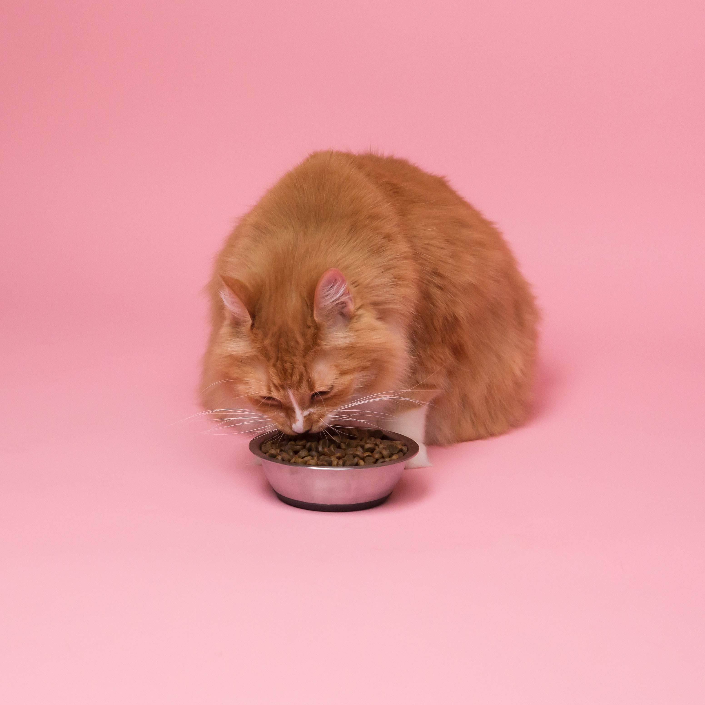

약 1만 2000년 전 수렵시대부터 가축화한 개와는 달리, 고양이는 녹여이 시작되고 문명이 형성되던 때부터 인간과 함께 생활하였다. 또한 인간이 직접 돌봐주고 먹여주며 키워온 개와는 달리 고양이는 거의 대부분의 기간을 인간 밀집 구역에서 창궐하는 쥐들을 알아서 잡아먹고 사는 '공생'의 형태로 지내왔다.

머리가 둥글고 얼굴은 짧고 넓으며, 눈이 둥글고 커서 양안시(양쪽 눈의 망막에 맺힌 대상물을 각각이 아닌 하나로 보게 하고, 입체적으로 보게 하는 눈의 기능)의 능력이 뛰어나다. 귓바퀴는 작은 삼각형 모양으로 끝에 긴 털이 있으며 몸에는 다양한 무늬가 있다. 몸길이는 보통 30~60cm이며 몸무게는 2~3kg부터 7.5~8.5kg에 이르기까지 다양하다. 꼬리는 종류에 따라 길이가 다르며 보통은 22~38cm 정도이다. 발가락은 앞다리에 5개, 뒷다리에 4개가 있으며 발톱을 살 속에 감출 수 있다.
고양이의 건강을 위해 나이 단계별 식사 사료 급여가 필요하다. 먼저 고양이 나이 단계별 사료 급여 시 포유기는 생후부터 4주에 이르는 시기이다. 이 시기에는 어미젖을 먹으며 자라나는 나이로 초유를 통해 여러 감염에 대한 저항력과 면역력을 어미로부터 물려받게 된다.
